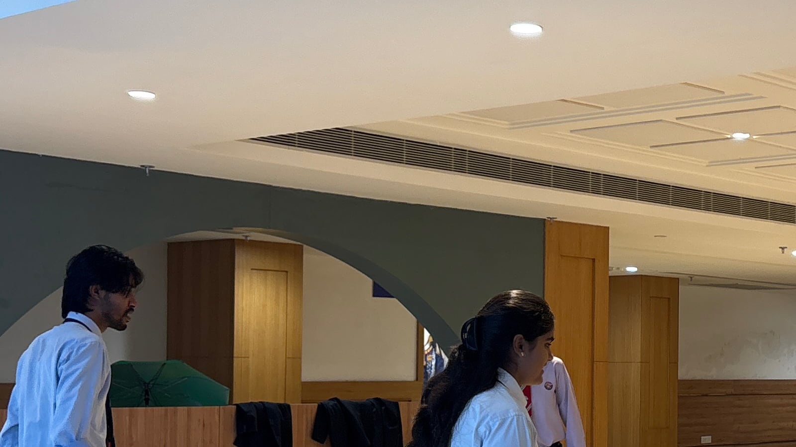

Institution feedback
Graphic Era | Cohort 1
Three experiential-learning sessions
Browse feedback
Institution feedback
Three experiential-learning sessions
Swipe the card or use the arrows to browse institutions.
Session-by-session feedback
Graphic Era | Cohort 1
Immediate participant feedback from this session.
The institution is listed, but completed forms and day-matched photographs have not yet been added.
Session 1 | participant learning
Loading the feedback snapshot.
Matched to the selected day

The space is intentionally left blank rather than showing a photograph from another day.